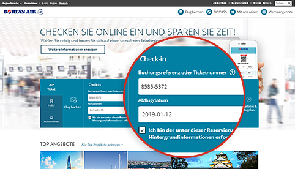
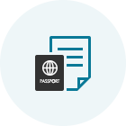
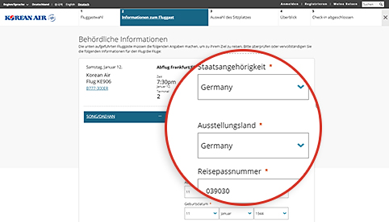
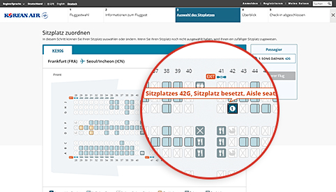
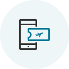
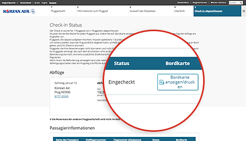

Step 1 Suchen Sie nach einer Reservierung
- Es ist einfacher einzuchecken, wenn Sie bei der Buchung Ihre Vielfliegernummer eingegeben haben.
- Wird die Reservierung nicht angezeigt, dann geben Sie entweder die Buchungsreferenz oder die Flugscheinnummer und anschließend das Abflugdatum und Ihren Namen ein.

Sie können den Web-Check-In starten, indem Sie die Reservierungsnummer, das Abreisedatum und den Namen des Passagiers eingeben, wenn Sie kein Nicht-Check-In-Mitglied im Ticketreservierungsbereich des Hauptfensters der Startseite sind.

Step 2 Geben Sie die Daten Ihrer Reisedokumente ein (internationale Flüge)
- Daten aus dem Reisepass und sonstigen erforderlichen Reisedokumenten müssen korrekt eingegeben werden. Wenn Sie ungültige Daten eingeben, wird Ihnen unter Umständen, je nach Ergebnis der Vorabprüfung am Abflug-/Ankunftsort, der Check-in verweigert.
- Mit dem mobilem Einchecken können Sie einfach Ihre Reisepassdaten erfassen, indem Sie die Reisepass-Scanning-Funktion nutzen.

Passinformationen wie Nationalität, ausstellendes Land / Region, Passnummer usw. können zum Zeitpunkt des Web-Check-Ins in den zweiten Bildschirm für die Eingabe von Passagierinformationen eingegeben werden.

Step 3 Zuweisung des Sitzplatzes
- Wählen Sie Ihren bevorzugten Sitzplatz aus.
- Melden Sie sich mit Ihrer ID (bzw. wenn Sie kein Mitglied sind, mit Ihrem Passwort) an, wenn Sie Ihre Sitzplatznummer ändern möchten. (Jedoch müssten SKYPASS-Daten vor der Anmeldung gespeichert werden.)

Web-Check-In-Schritt 3 Sie können die Informationen zu jedem Sitz, wie Sitzplatznummer, Ort und Sitzmerkmale, überprüfen und den gewünschten Sitzplatz auf dem Bildschirm für die Sitzzuweisung auswählen.

Step 4 Schließen Sie den Check-in-Vorgang ab
- Klicken Sie für jeden Fluggast „Bordkarte anzeigen/drucken“, um die Bordkarte auszudrucken.
- Vor Ablauf der Frist für den Online-Check-in können Sie Ihre Bordkarte neu ausstellen und Ihren Check-in stornieren.

Web-Check-in-Schritt 5 Auf dem Bildschirm Check-in Completion können Sie den Status des Web-Check-Ins überprüfen oder Ihre Bordkarte an den PC ausstellen.